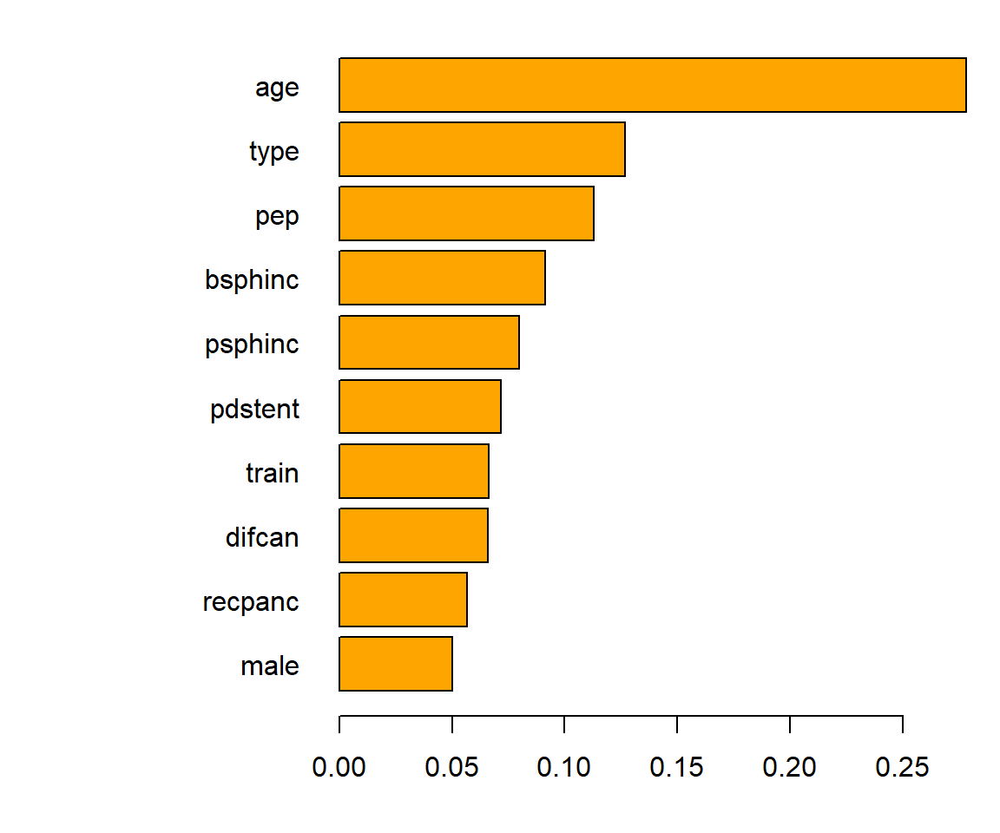
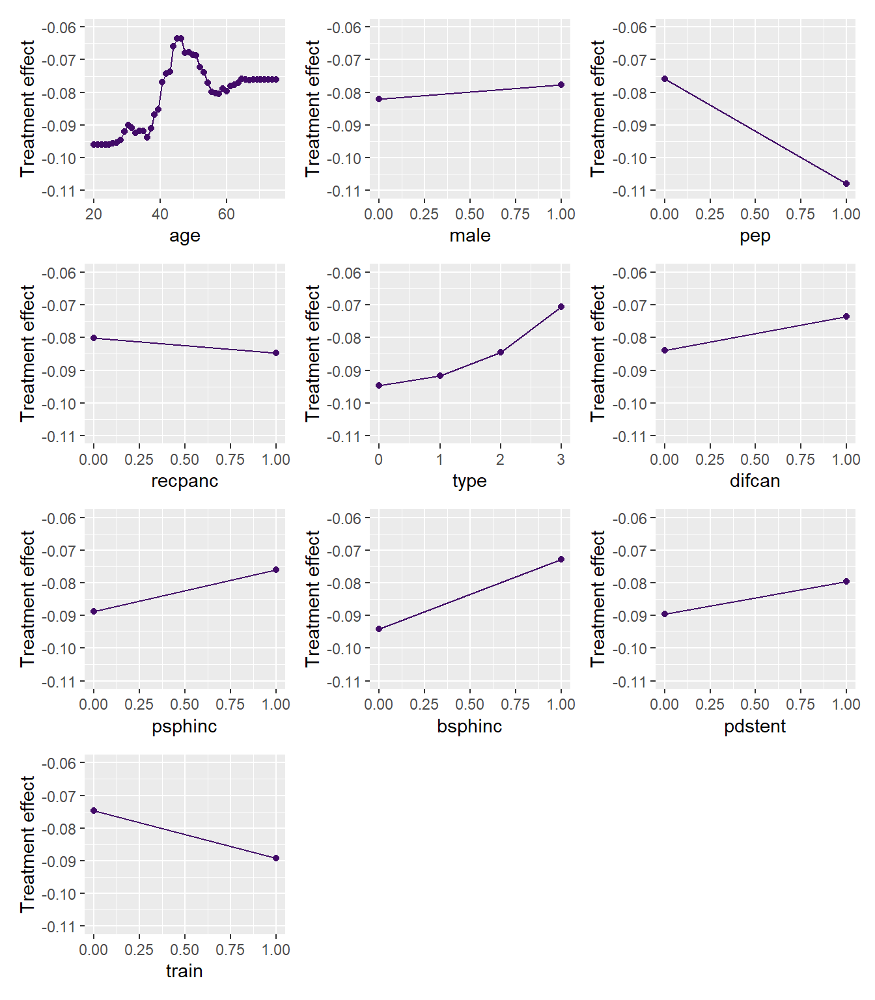
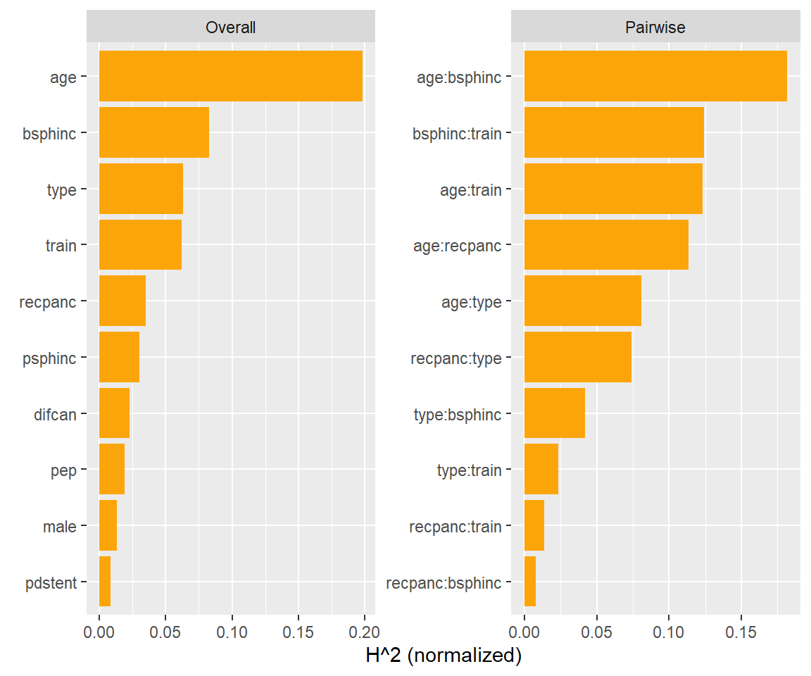
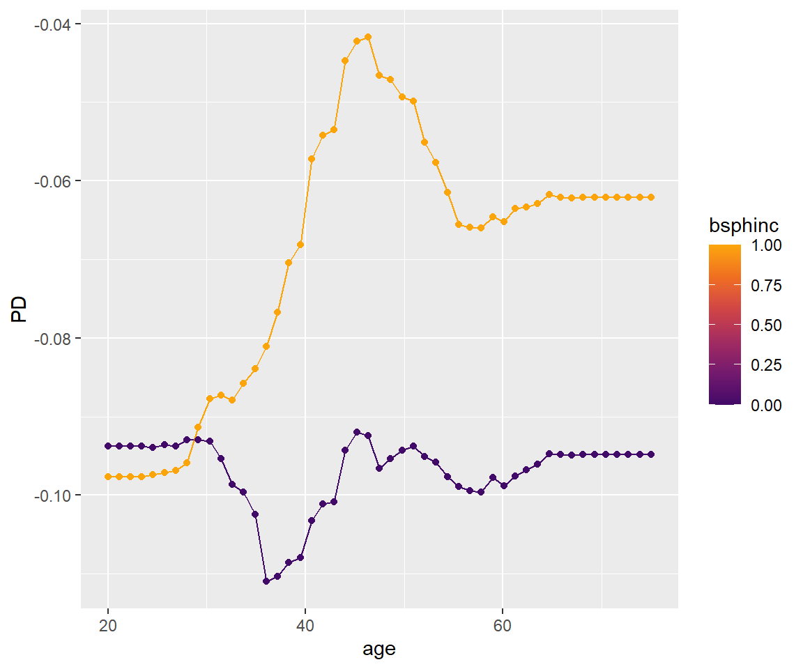
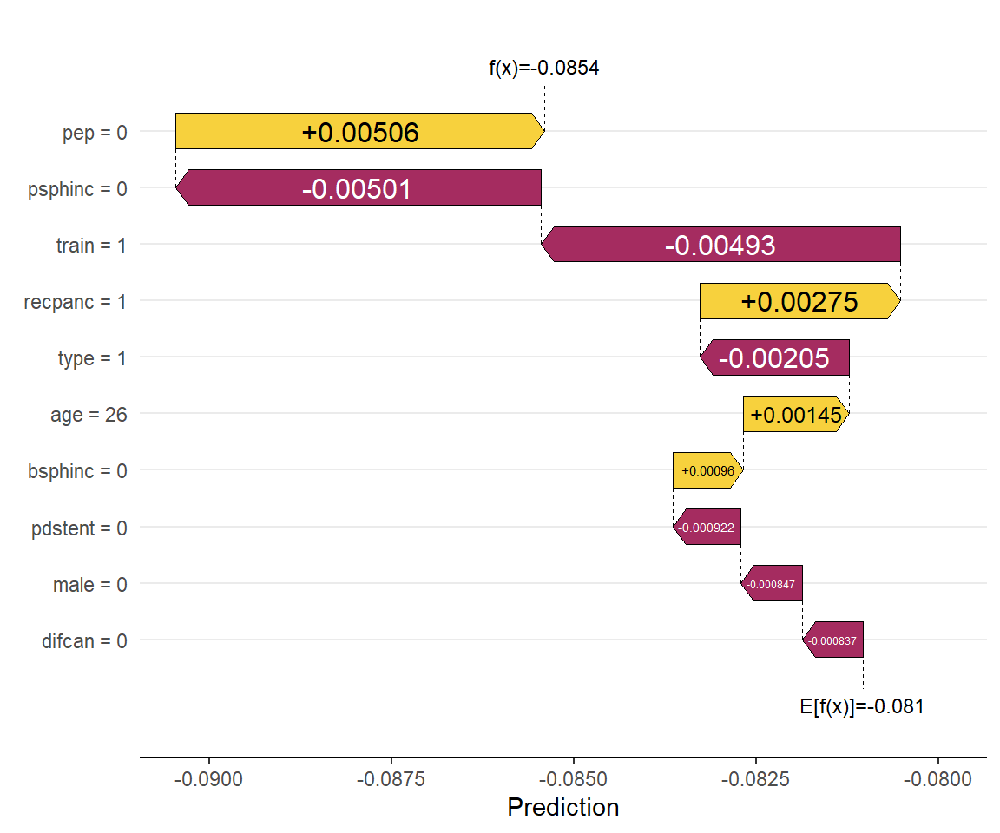
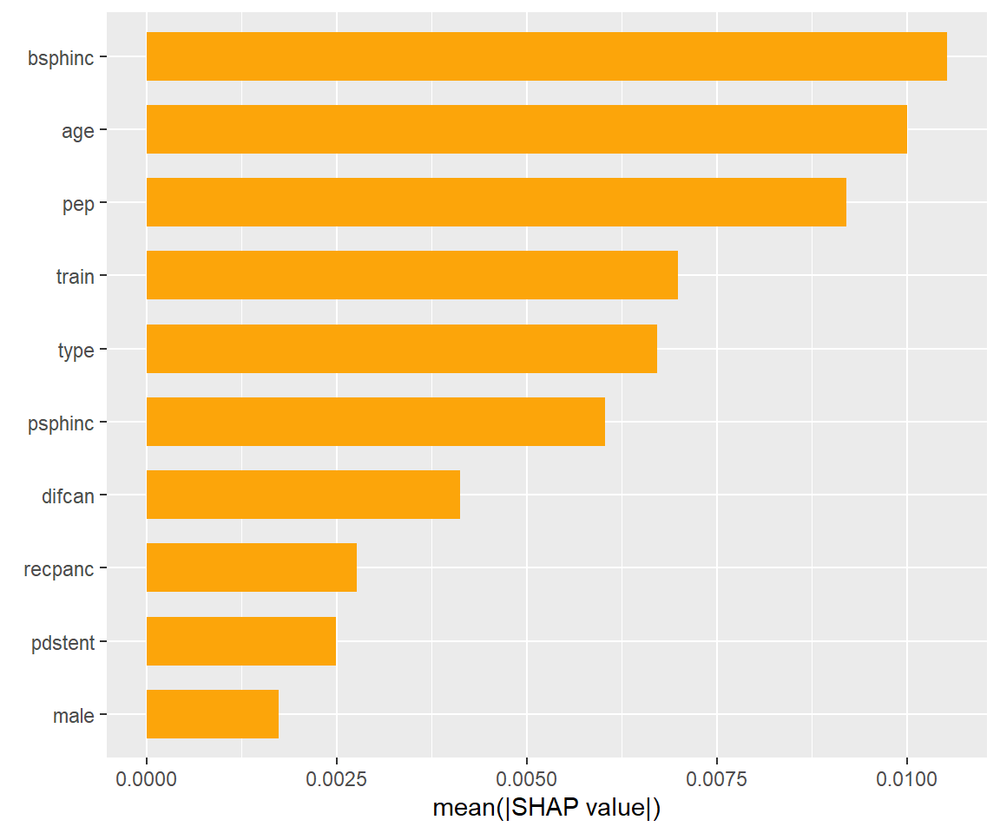
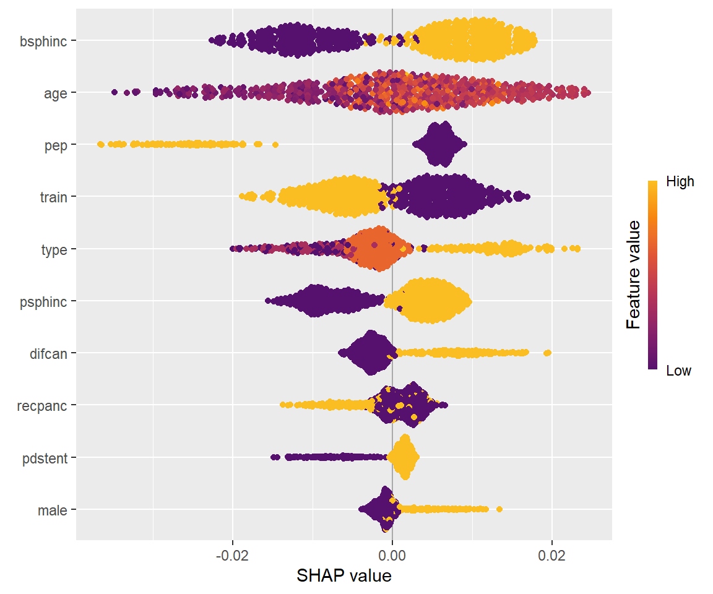
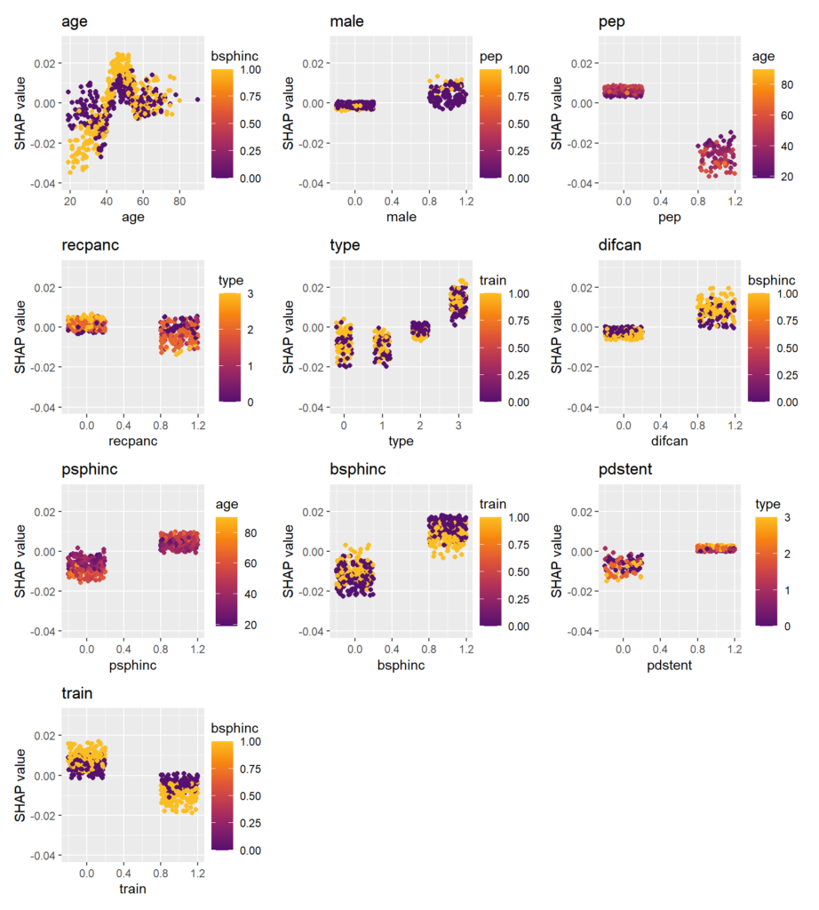

解释一个因果森林
我们用因果森林[1] 对一项随机对照临床试验中的处理效应建模，然后用常见的可解释性工具来解释这个黑盒模型。它们会揭示「处理在哪些人群中效果更好、在哪些人群中效果更差」——效果类似森林图，但是多变量的。
背景与解释（译者注）：本文作者是 Michael Mayer（lorentzen.ch，R/ML 领域的知名博主，{hstats}、{kernelshap} 等包的作者），发表于 2024 年 9 月。这篇博文是「因果森林 + 可解释性机器学习」交叉领域的经典实践范例：先用 grf 的 causal_forest() 拟合 CATE 模型，再用变量重要性、部分依赖图、Friedman H 统计量与 SHAP 把它解释给临床医生看。完整 R notebook 见 作者 GitHub。
一个关键前提：符号约定。原文的结局 Y=1 表示「ERCP 术后胰腺炎」（坏事），因此处理效应为负值代表处理有益。文中反复出现的「负值 = 更强的处理效应」说的就是这件事。读图时请先记住这一点，否则结论会全部反过来。
数据
作为示例，我们使用一项吲哚美辛（indomethacin）对比安慰剂预防 ERCP（经内镜逆行胰胆管造影）术后胰腺炎的两臂 RCT 的个体级数据（602 例患者）[2]。数据集可在 {medicaldata} 包中获得。
数据质量非常好，不需要花太多时间做数据准备：
- 对因子变量做整数编码；
- 挑选有意义的特征——基本上是文献 [2] 森林图（Figure 4）中展示的那些，去掉低信息量特征，并去掉「医院」这一变量。
处理效应的边际估计是 −0.078，即吲哚美辛使 ERCP 术后胰腺炎的发生概率下降 7.8 个百分点。我们的目标是建立并解释一个模型，看看这个数值是否与某些协变量相关联。
library(medicaldata)
suppressPackageStartupMessages(library(dplyr))
library(grf) # causal_forest()
library(ggplot2)
library(patchwork) # 组合多个 ggplot
library(hstats) # Friedman 的 H、部分依赖
library(kernelshap) # 通用 Kernel SHAP
library(shapviz) # SHAP 可视化
W <- as.integer(indo_rct$rx) - 1L # 0=安慰剂, 1=处理
table(W)
# 0 1
# 307 295
Y <- as.numeric(indo_rct$outcome) - 1 # Y=1：ERCP 术后胰腺炎（坏事）
mean(Y) # 0.1312292
mean(Y[W == 1]) - mean(Y[W == 0]) # -0.07785568
xvars <- c(
"age", # 年龄（岁）
"male", # 男性（1=是）
"pep", # 既往 ERCP 术后胰腺炎（1=是）
"recpanc", # 复发性胰腺炎病史（1=是）
"type", # Oddi 括约肌功能失常类型/程度（0=无, 到 3=3 型）
"difcan", # 乳头插管困难（1=是）
"psphinc", # 行胰管括约肌切开（1=是）
"bsphinc", # 行胆管括约肌切开（1=是）
"pdstent", # 放置胰管支架（1=是）
"train" # 有实习医生参与支架放置（1=是）
)
X <- indo_rct |>
mutate_if(is.factor, function(v) as.integer(v) - 1L) |>
rename(male = gender) |>
select_at(xvars)
head(X)
# age male pep recpanc type difcan psphinc bsphinc pdstent train
# 26 0 0 1 1 0 0 0 0 1
# 24 1 1 0 0 0 0 1 0 0
# 57 0 0 0 2 0 0 0 0 0
# 29 0 0 0 1 0 0 1 1 1
# 38 0 1 0 1 0 1 1 1 1
# 59 0 0 0 1 1 0 1 1 0
summary(X)
# age male pep recpanc
# Min. :19.00 Min. :0.0000 Min. :0.0000 Min. :0.000
# 1st Qu.:35.00 1st Qu.:0.0000 1st Qu.:0.0000 1st Qu.:0.000
# Median :45.00 Median :45.00 Median :0.0000 Median :0.000
# Mean :45.27 Mean :0.2093 Mean :0.2093 Mean :0.1595
# 3rd Qu.:54.00 3rd Qu.:0.0000 3rd Qu.:0.0000 3rd Qu.:1.000
# Max. :90.00 Max. :0.0000 Max. :0.0000 Max. :1.000
# type difcan psphinc bsphinc
# Min. :0.000 Min. :0.0000 Min. :0.0000 Min. :0.0000
# 1st Qu.:1.000 1st Qu.:0.0000 1st Qu.:0.0000 1st Qu.:0.0000
# Median :2.000 Median :2.000 Median :1.0000 Median :1.0000
# Mean :1.743 Mean :0.2608 Mean :0.5698 Mean :0.5714
# 3rd Qu.:2.000 3rd Qu.:1.0000 3rd Qu.:1.0000 3rd Qu.:1.0000
# Max. :3.000 Max. :1.0000 Max. :1.0000 Max. :1.0000
# pdstent train
# Min. :0.0000 Min. :0.0000
# 1st Qu.:1.0000 1st Qu.:0.0000
# Median :1.0000 Median :0.0000
# Mean :0.8239 Mean :0.4701
# 3rd Qu.:1.0000 3rd Qu.:1.0000
# Max. :1.0000 Max. :1.0000模型
我们用 {grf} 包拟合一个因果森林 [1]——一个试图估计条件平均处理效应（CATE）E[Y(1) − Y(0) | X = x] 的树集成。正因如此，它可以用来研究处理效应的异质性。
与典型的随机森林相比，它有两个关键点：
- 诚实树（honest trees）：在每棵树内部，一部分数据用于分裂，另一部分用于计算节点值。这种防过拟合机制在
{grf}的所有随机森林中都有实现。 - 分裂的选择是为了产生处理效应差异尽可能大的子节点（在一些附加约束下）。
背景与解释（译者注）：原文作者特别提醒：并发症发生率约 13%，相对较低。因此某些亚组中处理效应（在绝对尺度上度量）变小，可能只是因为该亚组的并发症发生率本来就接近 0。理想情况下可以建模相对处理效应或比值比，但作者目前没有在 {grf} 中找到该选项。这是把 CATE 用于低发生率结局时的常见陷阱——效应值的绝对大小混杂了基线风险的信息。
fit <- causal_forest(
X = X,
Y = Y,
W = W,
num.trees = 1000,
mtry = 4,
sample.fraction = 0.7,
seed = 1,
ci.group.size = 1,
)用「经典」技术解释模型
看过树分裂的重要性之后，我们通过部分依赖图（PDP）和 Friedman 的 H 统计量来研究效应。这些方法只需要一个 predict() 函数和一个参考数据集。
imp <- sort(setNames(variable_importance(fit), xvars))
par(mai = c(0.7, 2, 0.2, 0.2))
barplot(imp, horiz = TRUE, las = 1, col = "orange")
pred_fun <- function(object, newdata, ...) {
predict(object, newdata, ...)$predictions
}
pdps <- lapply(xvars, function(v) plot(partial_dep(fit, v, X = X, pred_fun = pred_fun)))
wrap_plots(pdps, guides = "collect", ncol = 3) &
ylim(c(-0.11, -0.06)) &
ylab("Treatment effect")
H <- hstats(fit, X = X, pred_fun = pred_fun, verbose = FALSE)
plot(H)
partial_dep(fit, v = "age", X = X, BY = "bsphinc", pred_fun = pred_fun) |>
plot()变量重要性
因果森林的变量重要性可以用「每个特征被用于分裂的相对次数（在前 4 层）」来度量。最重要的变量是年龄。

主效应
为了研究协变量对 CATE 的主效应，我们看部分依赖图（PDP）：在保持其他特征取值不变的情况下，展示平均预测如何随一个特征的取值变化（这种「保持其他不变」有时并不自然）。
可以看到：35 岁以下人群的处理效应最强，随后减弱到 45 岁；对更年长的患者，效应又回升。
请记住：负值代表更强的（有益的）处理效应。

交互强度
哪些协变量之间存在强交互？
度量两两交互强度的一个模型无关方法是 Friedman 的 H 统计量 [3]。它度量「用两个特征各自的一维部分依赖函数去近似它们的二维部分依赖函数」所产生的误差。值为 0 表示没有交互；值为 α 意味着联合效应（变异）中约有 100α% 来自交互。
下图右侧显示的就是这个统计量：年龄与胆管括约肌切开（bsphinc）之间，超过 15% 的联合效应变异来自它们的交互。
通常，两两 H 统计量只对最重要的变量、或总体交互强度高的变量计算。总体交互强度（图左侧）可以用 Friedman H 的一个变体来度量，它显示预测变异中有多少来自「与该特征的交互」。

可视化强交互
交互可以用「分层 PDP」来可视化。可以看到：处理效应与年龄的关联主要出现在接受了胆管括约肌切开的人群中。

SHAP 分析
一种解释模型的「现代」方法基于 SHAP [4]。它把（中心化后的）预测分解为各协变量的可加贡献。
由于 {grf} 没有内置 TreeSHAP，我们使用 {kernelshap} 实现的慢得多的 Kernel SHAP 算法——它对任何模型都适用。
我们先解释单个数据行的预测，再分解大量预测；这些分解可以用简单的描述性图表来分析，从而获得对模型整体的洞察。
# 解释单个 CATE
kernelshap(fit, X = X[1, ], bg_X = X, pred_fun = pred_fun) |>
shapviz() |>
sv_waterfall() +
xlab("Prediction")
# 全局解释所有 CATE
system.time( # 13 分钟
ks <- kernelshap(fit, X = X, pred_fun = pred_fun)
)
shap_values <- shapviz(ks)
sv_importance(shap_values)
sv_importance(shap_values, kind = "bee")
sv_dependence(shap_values, v = xvars) +
plot_layout(ncol = 3) &
ylim(c(-0.04, 0.03))解释单个 CATE
用瀑布图解释第一位患者特征取值所对应的 CATE。

SHAP 重要性图
各条形显示平均绝对 SHAP 值。例如可以说：胆管括约肌切开平均而言对处理效应的影响超过 ±0.01（但看不出方向）。

SHAP 摘要图
这是 SHAP 值的一维图，特征取值映射到颜色深浅，排序与重要性图一致。相比重要性条形图，我们还能额外地看出：胆管括约肌切开削弱处理效应（SHAP 值为正）。

SHAP 依赖图
SHAP 值对特征取值的散点图。给定 x 处的垂直散布（vertical scatter）表明存在交互；颜色标尺上还可以选一个候选交互特征。例如，年龄对处理效应的作用模式与 PDP 中相似；借助颜色，我们还能看出年龄效应依赖于胆管括约肌切开。
记住：SHAP 值在中心化预测尺度上。正值依然代表更弱的处理效应。

小结
{grf}是个非常棒的包，后续本博客还会有更多相关文章。- 因果森林是直接建模处理效应的一种有趣方式。
- 标准可解释性方法可以用来解释这个黑盒模型。
参考文献
- Athey, Susan, Julie Tibshirani, and Stefan Wager. “Generalized Random Forests”. Annals of Statistics, 47(2), 2019.
- Elmunzer BJ et al. A randomized trial of rectal indomethacin to prevent post-ERCP pancreatitis. N Engl J Med. 2012 Apr 12;366(15):1414-22. doi: 10.1056/NEJMoa1111103.
- Friedman, Jerome H., and Bogdan E. Popescu. Predictive Learning via Rule Ensembles. The Annals of Applied Statistics 2, no. 3 (2008): 916-54.
- Scott M. Lundberg and Su-In Lee. A Unified Approach to Interpreting Model Predictions. Advances in Neural Information Processing Systems 30 (2017).